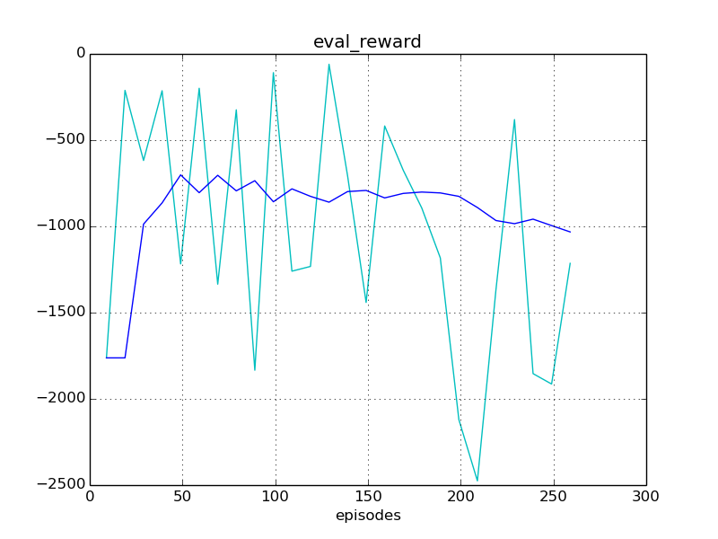
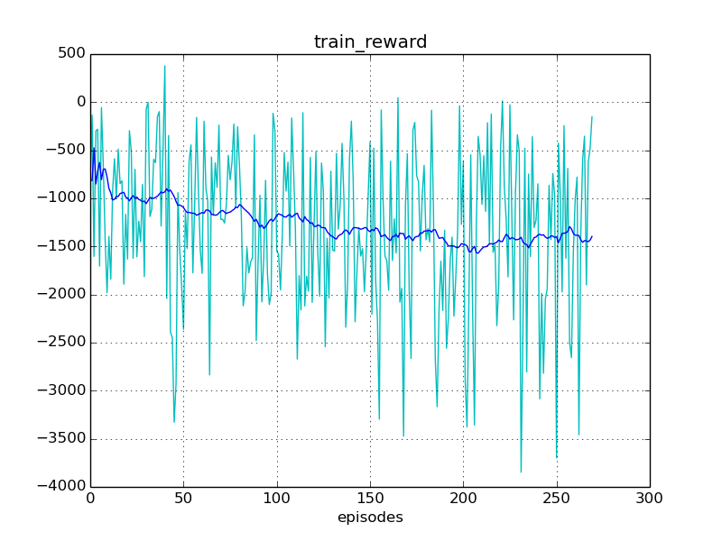
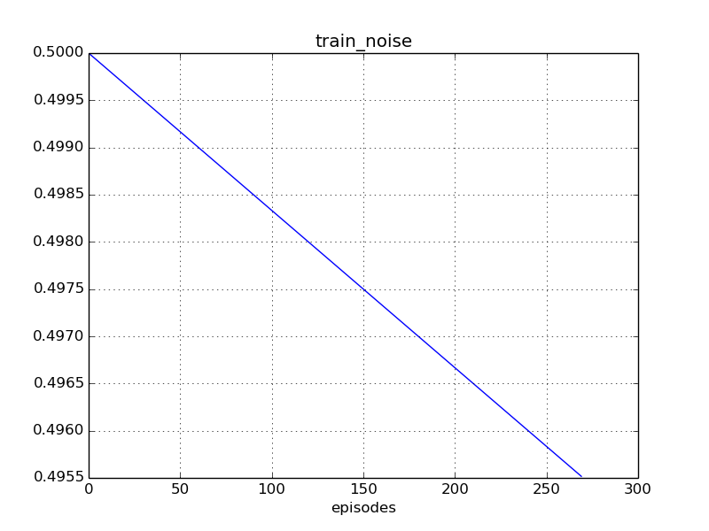
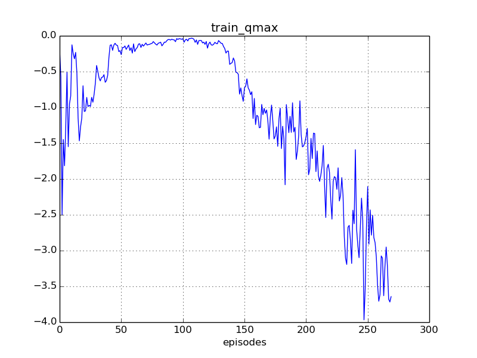

Experiment #001
Reward: -1039
Qmax: -3
Left: 08:55:10 (1%)
Report time: 2016-12-11 22:39:34
Host name: bernard
Configuration
Experiment:
exp.agent_class: core.mujoco_agent.MujocoAgent
exp.base_path: ../../../out/experiments/scorpion/
exp.episodes: 30000
exp.id: 001
exp.logger_class: core.logger.Logger
exp.mind_class: core.tensorflow_mind.TensorflowMind
exp.platform_class: core.tensorflow_platform.TensorflowPlatform
exp.save_every_episodes: 200
exp.steps: 50
exp.world_class: core.mujoco_world.MujocoWorld
Algorithm:
alg.batch_size: 512
alg.buffer_size: 100000
alg.noise_rate_method: linear_05_00
alg.noise_sigma: 0.1
alg.noise_theta: 0.01
Mind:
mind.algorithm_class:
mind.evaluate_every_episodes: 10
Environment:
env.id: Zoo:Mujoco:Scorpion-v1
env.init_every_resets: 30
env.model_agent_path: ../assets/agent.xml
env.model_world_path: ../assets/world.xml
env.reward_method: default_reward
env.target_location_method: random_target
env.target_mouse_control: False
env.target_range_xz: [1.0, 1.0]
Reporting:
report.diagram_mean_frame: 50
report.refresh_html_every_secs: 30
report.summary_every_episodes: 20
report.write_every_episodes: 15
Instances
Experiment:
id: 001
work_path: ../../../out/experiments/scorpion/001
platform: TensorflowPlatform
world: MujocoWorld:
id: Zoo:Mujoco:Scorpion-v1
model_path: ../assets/world.xml
obs_dim: 10
act_box: [-200. -150. -50.]
[ 200. 150. 50.]
agent: MujocoAgent:
model_path: ../assets/agent.xml
mind: TensorflowMind:
algorithm: DDPG_PeterKovacs
buffer: ReplayBuffer:
buffer_size: 100000
num_experiences: 13500
episode: 269
logger: Logger:
saved_time: 00:00:00
train_history: 270
eval_history: 26
reporter: Reporter:
html_path: /home/roman-ml/prj/rmus/zoo/out/experiments/scorpion/001/reporter/report.html
Progress
Episodes: 270
Steps: 13500
Total time: 09:00:01
spent: 00:04:51 (0%)
left: 08:55:10
Finish: 07:34:44 2016-12-12
Performance: 0.93 per sec
Results
Train reward: -1361.60
Eval reward: -1039.12
Diagrams



